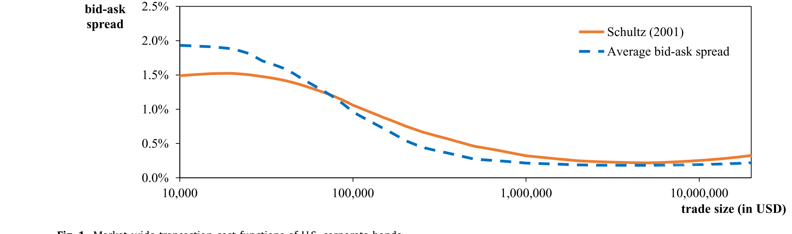
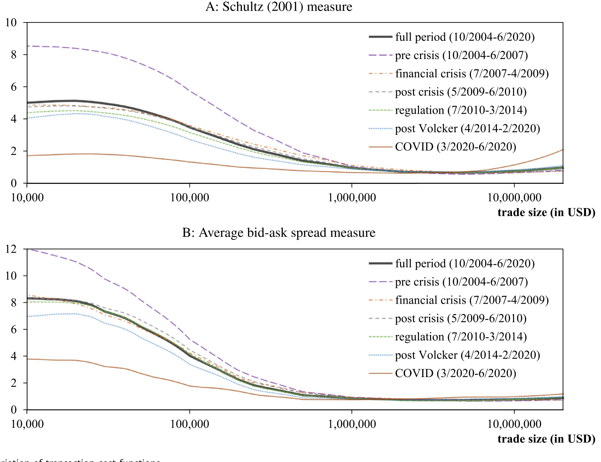
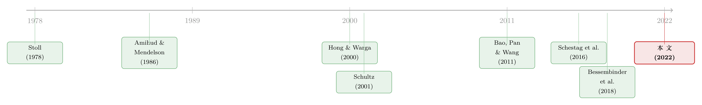

把「成交价」从「成交量」里解放出来——重新丈量公司债的流动性
本文读的是 Reichenbacher & Schuster (2022, Journal of Financial Economics)：在 OTC 债券市场，交易成本强烈依赖于交易规模，而大多数债券又交易稀疏、单笔金额忽大忽小——于是「平均交易成本」的变化，往往记录的是「这次成交多大」，而不是「这只债有多好卖」。作者提出一个两步法，把全样本的「成本—规模」关系与单只债券的逐笔成交分开估计，得到一个与规模无关 (size-invariant) 的流动性度量。换个尺子，公司债流动性的时间序列、横截面、乃至它的资产定价含义，统统变了样。
1 一个被「成交量」悄悄污染的数字
先讲一个小故事，它就摆在论文的引言里，简单到几乎像个脑筋急转弯。
假设有一只公司债，今天成交了四笔。两笔是散户规模的小单，来回成本 (roundtrip cost) 各 150 个基点 (bps)；另两笔是机构的大单，来回成本只有 20 bps。把这四笔一平均，今天的「平均交易成本」是 85 bps。第二天，这只债只成交了两笔，都是散户小单，来回成本依然是 150 bps——于是「平均交易成本」跳到了 150 bps。
请问：从第一天到第二天，这只债的流动性变差了吗？
没有。小单的成本两天都是 150，大单的成本（如果有大单）也没动。这只债的流动性状况完全没变。但任何一个盯着「平均来回成本」的观察者，都会得出一个错误的结论：交易成本从 85 bps 暴涨到了 150 bps，流动性急剧恶化。
问题出在哪？出在平均这个动作上。它把「成本」和「规模」搅在了一起。第二天平均成本之所以高，不是因为债变难卖了，而仅仅是因为那天恰好没有大单来「拉低」平均值。
更糟的是那些常见的「补救」办法。剔除 $100,000 以下的小单？那第二天会被整个删掉，因为它只剩小单。用成交量加权 (volume-weighted) 的成本？在这个例子里反而雪上加霜——第一天加权成本被大单压得更低，第二天却纹丝不动，于是「上涨」的假象被放得更大。
这就是全文的张力所在。流动性是我们想测的东西，可我们手里的尺子，刻度会随着「这个月这只债碰巧成交了多大」而漂移。对单只债如此，对横截面比较、对时间序列、对危机时刻的判断，无一幸免。
2 为什么偏偏是美国公司债
接着，一个自然的问题是：这种「成交量污染」在哪里最致命？答案是美国公司债市场，理由有二。
第一，散户小单是绝对主力。 论文指出，约三分之二的成交都是 $100,000 以下的散户规模交易。这意味着，单笔成交的规模天然就在「散户—机构」两个量级之间反复横跳。
第二，绝大多数债券交易稀疏。 一只典型的公司债一个月可能只成交寥寥几次。样本越小，平均交易规模的随机波动就越大——今天碰上一笔大单，明天碰上两笔小单，平均成本就上蹿下跳，而这背后没有任何真实的流动性变化。
更要命的是，规模的漂移不只是「随机噪声」，有时是系统性的。论文举的例子是评级下调 (rating downgrade)：当一只债被打入垃圾级，受监管约束的机构投资者要集体抛售大额头寸，平均成交规模会系统性地放大。于是在这种「火线抛售 (fire sale)」前后，标准度量会被规模的系统性变化牵着鼻子走，产生方向性的偏误——恰恰是在我们最需要看清流动性的时刻，尺子坏了。
这里值得停一下。债券交易成本随规模递减，本身是个老知识（Stoll, 1978；Edwards et al., 2007；Feldhütter, 2012 都讲过）。但作者说，文献「知道」这件事，却在计算流动性度量时把它忽略了。他们要做的，是第一次把「成本—规模」关系直接焊进度量本身。
3 识别策略：把一件事拆成两步
现在到了真正关键的一步。作者的办法，本质上是一句话：让全市场去定义「成本—规模」的形状，让单只债去定义「自己在这条曲线上的高低」。
第一步，估一条全市场的成本函数。 在每个月 t，用样本里所有债、所有成交，非参数地估出一条 \(c_t(vol)\)——交易成本如何随成交（名义）规模 vol 变化。这条曲线是当月「市场平均流动性状态」的基准。为了让不同月份可比，把它归一化：
$$\hat{c}_t(vol) = \frac{c_t(vol)}{\overline{c}_t(vol)}$$
其中 \(\overline{c}_t(vol)\) 是当月 \(c_t(vol)\) 的成交量加权平均水平。归一化保证了一件事：跨期比较时，「代表性交易」的成本被锚定在 1。
这条曲线长什么样？见图 1。一个 $10,000 的散户头寸，平均来回成本约 1.5%；而一个 $5,000,000 的机构头寸，买卖价差 (bid-ask spread) 只有约 20 bps。文献把这种巨大差异归因于机构更强的议价能力、更低的搜寻成本，以及对债券公允价值更精确的判断（Green et al., 2007；Harris & Piwowar, 2006）。注意右尾那个微微的翘起——当规模大到极端时，交易商要承担更高的存货风险，成本反而回升。

Figure 1: Market-wide transaction cost functions of U.S. corporate bonds
第二步，给每只债估一个缩放因子。 有了 \(\hat{c}_t(vol)\) 这条「形状」，单只债 i 在月 t 的流动性，就用一个缩放因子 (scaling factor) \(sf_{i,t}\) 来刻画——它把这条全市场曲线整体上抬或下压，去最好地拟合这只债真实观察到的逐笔成本：
这里 \(vol_{k,i,t}\) 是第 k 笔成交的规模。妙处在于：因为同一个月里所有债共用同一条 \(\hat{c}_t(vol)\)，不同债之间「碰巧成交了多大」的差异，被这条共同曲线吸收掉了，不再污染因子估计。这就是「与规模无关」的来源。
缩放因子怎么读？设想一个成交规模 \(vol^*\)，恰好让曲线取值等于当月成交量加权均值，那么 \(\hat{c}_t(vol^*)=1\)。于是 \(sf_{i,t}\) 就可以直接解释为「一笔代表性规模交易的成本」——\(sf = 0.005\) 意味着这只债代表性交易的买卖价差是 50 bps。一个数，干净利落地概括了这只债跨所有规模的流动性。
这套方法的「数据胃口」和标准度量一样小：只要有一笔成交，就能算。而且它顺手给了投资者一个红利——任意头寸规模的预期交易成本，直接用「个体缩放因子 × 全市场成本函数在该规模处的取值」就能算出来，无需挨个去问交易商报价。
4 把两个经典度量「改装」一遍
作者强调，这不是要发明又一个孤零零的新指标，而是一套可以嫁接到大量现有度量上的改装件。他们示范了两个最经典的。
其一，Schultz (2001) 度量。 它的原始模型是把逐笔的相对价格偏离 \(y_{k,i,t}\) 对交易方向回归：
$$y_{k,i,t} = \alpha_{i,t} + c_{i,t}\cdot D_{k,i,t} + \epsilon_{k,i,t}$$
其中 \(D_{k,i,t}\) 是交易方向指示：客户买入取 +1，客户卖出取 -1，交易商之间取 0；\(c_{i,t}\) 近似这只债当月的平均半价差 (half-spread)。改装的做法，就是把那个「一刀切」的 \(c_{i,t}\) 换成「缩放因子 × 全市场曲线」：
$$y_{k,i,t} = \alpha_{i,t} + sf^{Schultz}_{i,t}\cdot \hat{c}_t(vol_{k,i,t})\cdot D_{k,i,t} + \epsilon_{k,i,t}$$
其二，平均买卖价差 (average bid-ask spread) 度量（Hong & Warga, 2000；Chakravarty & Sarkar, 2003），即同一天买入价与卖出价的相对差：
$$AvgBidAsk_{i,d} = \frac{P^{buy}_{i,d} - P^{sell}_{i,d}}{0.5\cdot\left(P^{buy}_{i,d} + P^{sell}_{i,d}\right)}$$
它的改装稍微费点劲——因为买卖价差只在「每天」而非「每笔」上可得，得对当天进进出出的买单、卖单分别去评估全市场成本函数再做平均。技术细节作者用一个迭代的两阶段加权回归 (LOESS) 来实现，留给了网络附录。
为什么挑这两个？因为它们都用到了「成交方向」的信息，而且如 Schestag et al. (2016) 所示，债市里各种高频流动性度量彼此高度相关——示范这两个，方法的普适性就立住了。
5 换了尺子，世界变了样
那么，这把新尺子到底量出了什么不一样的东西？论文用了好几个应用来回答，我挑最有说服力的几个。
精度：少了 4%–18% 的测量误差。 作者做了一个 bootstrap 式的实验：拿那些交易频繁、本来能测得很准的债，故意丢掉一部分成交，看度量误差会变多大。结果是，两个 size-adapted 度量平均带来约 4% 到 18% 更低的测量误差。精度的提升来自三处：隐含的成交量加权让度量不再被散户成本主导；切断了「平均成交规模」与标准度量之间的机械关联；以及在成交极少时更稳健。
时间序列：危机里被系统性低估的恶化。 标准度量严重依赖散户小单成本，而危机里小单成本上升得反而比大单慢——于是标准度量会系统性地低估危机期的流动性恶化。作者把样本切成六段：危机前（2004.10–2007.6）、金融危机（2007.7–2009.4）、危机后、2010.7 起的监管期（Dodd-Frank）、2014.4 起的后 Volcker 期，以及 2020.3–6 的 COVID 冲击期。一个有意思的现象是：危机后散户成本因电子化交易而下降，大单成本却因更严的监管（Volcker 规则）而上升——两者反向移动，标准度量在这种时候彻底失灵，而 size-adapted 度量因为隐含加权，才看得清整体。

Figure 2: Time variation of transaction cost functions
横截面：谁才是流动性的真正决定因素。 在面板回归里，发行规模 (outstanding amount) 和年龄 (age) 这些「静态属性」对流动性的解释力，用 size-adapted 度量后大幅下降——因为它们本就与成交规模高度相关，标准度量是借着这层机械关联「虚高」了。反过来，剩余期限（作为利率风险代理）和信用评级，与流动性的关系在新度量下强得多。换句话说，标准度量经由它和成交规模的机械相关，会扭曲我们对「流动性横截面成因」的推断。
资产定价（其一）：收益率利差里被低估的流动性。 在一个借鉴 Friewald et al. (2012) 的面板设定里，作者把收益率利差的变化对逐笔交易成本的变化回归。能归因于交易成本的那部分调整后 \(R^2\)，从标准度量切换到 size-adapted 度量后翻了三倍多。这说明：用标准度量时，我们把「收益率里属于流动性的那一块」算少了。作为稳健性，删小单、简单成交量加权，表现都比未调整的标准度量还差——再次印证：小单里含着真金白银的流动性信息。
资产定价（其二）：流动性「水平」还是流动性「风险」被定价？ 这是我最喜欢的一个反转。文献长期争论：到底是债券流动性的水平 (level) 被定价（Amihud & Mendelson, 1986 的经典预测），还是流动性风险 (liquidity risk)——即对市场整体流动性冲击的暴露——被定价？Lin et al. (2011)、Dick-Nielsen et al. (2012)、Bai et al. (2019) 支持后者，而 Bongaerts et al. (2017) 干脆找不到显著的流动性风险溢价。
作者用更精确的 size-adapted 度量重做这件事，发现：流动性水平溢价在切换到新度量后增加了超过 50%；而流动性风险溢价反而略微变小。他们给的解释很漂亮：标准度量里的特异误差（idiosyncratic error）会相互抵消，而流动性水平又和流动性 beta 高度相关——于是本该归给「水平」的溢价，被误记到了「风险」头上。一旦尺子更准，水平这条腿就显形了。这与近年「流动性风险溢价证据脆弱」的怀疑是呼应的。
6 文献脉络
把镜头拉远，这篇论文坐落在一条相当清晰的演进线上。
最上游是市场微观结构的奠基：Stoll (1978) 用交易商提供「即时性」服务的供给来解释价差，Amihud & Mendelson (1986) 则把买卖价差正式写进资产定价——流动性差的资产，要用更高的预期收益来补偿。这是后面所有「流动性溢价」研究的母题。
接着，债市自己的度量工具开始成型。Hong & Warga (2000) 与 Schultz (2001) 给出了从交易数据估算公司债交易成本的经典方法——本文改装的正是这两个。再往后，TRACE 数据的开放催生了一波实证：Bao et al. (2011) 量出公司债的「非流动性」，Dick-Nielsen et al. (2012) 追踪了次贷危机前后的流动性变迁，Bessembinder et al. (2018) 用资本承诺刻画了危机后做市能力的萎缩（本文的子区间划分正是沿用了它的分界点）。
然后，一个总结性的工作出现了：Schestag et al. (2016) 系统比较了债市里各种流动性度量，并指出股市里好用的价格冲击类度量（如 Kyle 的 \(\lambda\)）在债市并不奏效——这恰恰给本文留下了空间：既然价格冲击不好用，那就把「规模依赖」直接缝进高频成本度量里。

于是本文落在这条线的末端：它不否定任何一个前人度量，而是给它们装上一个「与规模无关」的滤镜。关于「谁持有债券、谁来接盘如何决定其价格与流动性」这类更结构化的追问，可参见本博客《谁来接住这一大笔债券？——公司债大宗交易里被遗忘的「接盘人」》与《谁在持有这张债券，决定了它的价格》；而把机器学习用于公司债收益率预测的尝试，可参见《把机器学习的黑箱拆成玻璃箱：公司债收益率能被「看懂」地预测吗？》。
7 评论与延伸（Q&A + 研究方向）
(a) 几个可能的疑问
Q：这和「成交量加权成本」到底差在哪？不都是在处理规模吗？
差别是根本性的。成交量加权仍然只用这只债自己的成交去算，碰上某天只有小单，加权成本照样虚高（开篇的例子里它甚至更糟）。本文用的是全样本估出的成本—规模曲线，单只债只贡献一个「整体上下平移」的缩放因子——它问的不是「这只债成交了多大」，而是「在同样规模下，这只债比全市场基准贵还是便宜」。
Q：用「全市场一条曲线」会不会太粗暴，抹掉了债与债之间形状的差异？
作者试过更灵活的设定（比如让大单成本相对小单可以变动更陡，借鉴 Anderson & Stulz, 2017），结论是复杂度只换来非常有限的精度提升。直觉上，「成本—规模」的形状在横截面上相当稳定，真正区分债券的是水平而非形状——这正是缩放因子要抓的东西。
Q：缩放因子那个回归 (2) 是不是有联立性问题？曲线要靠缩放因子，缩放因子又要靠曲线。
是的，严格说要同时优化曲线 \(\hat{c}_t(\cdot)\) 和所有缩放因子。作者用一个迭代的两阶段加权回归绕开联立：先固定上一轮的缩放因子估曲线（LOESS），再固定曲线逐债估缩放因子，反复迭代直到归一化缩放因子的平均绝对变化低于
1e-6。这是工程上的近似，不是封闭解，但收敛性在实践中没问题。
Q：「水平溢价涨 50%、风险溢价反而缩小」会不会只是换了个度量后的机械结果？
这正是要警惕的地方。作者的论证是：更准的度量降低了特异测量误差，而测量误差在标准度量里会经由「水平与 beta 的高相关」把溢价错误地灌到风险那条腿上。这个解释自洽且与 Bongaerts et al. (2017)「找不到风险溢价」相容，但严格说它仍是一个度量改进下的再归因，而非一个独立的因果实验——把它当作「证据天平进一步偏向水平」比当作「定论」更稳妥。
Q：评级下调当「自然实验」，干净吗？
下调到垃圾级触发受监管机构的强制抛售，确实带来平均成交规模的外生上升，这一点机制清楚。但下调本身也伴随信用基本面恶化、价格下跌、波动上升——这些会同时影响真实流动性。作者的主张是「标准度量在此处有系统性偏误、新度量能看清恶化」，这个相对比较是可信的；但要把「流动性恶化幅度」精确归因，仍需小心其他同时发生的冲击。
Q：方法依赖逐笔成交方向（买/卖/商间），对那些连方向都难判的极稀疏债券还成立吗？
这是适用边界。两个示范度量都吃「交易方向」信息，Schultz 度量至少要两笔方向不同的成交加上共识价，平均买卖价差度量要同一天有买有卖。对一个月只成交一两次、且全是同向的债，方法和标准度量一样会受限——它改善的是「有信息但被规模污染」的情形，而非「根本没信息」的情形。
(b) 几个可能的研究问题与提案
1. 把 size-adapted 度量搬到「外资持有人」与流动性的关系上。 【经济故事】外资机构（尤其受本国监管约束者）在压力期的抛售，往往是大额、同向、集中的——这正是标准度量被「平均成交规模」系统性污染最严重的场景。用 size-adapted 度量重测「外资持有比例 → 债券流动性」，很可能修正现有文献里被规模混淆的结论。 【可行性】中。需要 Enhanced TRACE（成本）叠加 eMAXX/Lipper 之类的持有人面板（外资份额），识别上可借「指数纳入」或「本国监管冲击」做外生变化。数据可得，难点在持有人国别的精确匹配。
2. COVID 冲击期的「水平 vs. 风险」再检验。 【经济故事】2020 年 3 月公司债流动性骤变（O'Hara & Zhou, 2021），是检验「水平溢价」稳健性的天然窗口。本文样本止于 2020.6，正好覆盖冲击但来不及看清横截面定价后果。 【可行性】高。数据现成（Enhanced TRACE 已延伸），方法本文已开源（含 SAS 代码与逐月成本函数）。直接把样本延长、在冲击前后做横截面收益—流动性回归即可，doable。
3. 把「规模依赖」缝进价格冲击类度量，而不只是价差类度量。 【经济故事】Schestag et al. (2016) 说价格冲击度量在债市不好用，本文示范的是价差类（Schultz、bid-ask）。一个自然的问题是：能否用同样的「全市场曲线 + 个体缩放因子」框架，去救活 Amihud 式或 Kyle 式的冲击度量？ 【可行性】中。逐笔数据足够，难点是冲击度量本身在稀疏债券上信噪比低，缩放因子估计可能不稳——需要先论证识别条件，属于「值得一试但不保证成功」。
4. 用缩放因子做「任意规模成本预测」的交易级验证。 【经济故事】本文最实用的副产品，是「个体缩放因子 × 全市场曲线」能预测任意头寸的成本。这是个可被样本外检验的预测命题。 【可行性】高。用 Diebold-Mariano / Harvey 等（本文参考了 Harvey et al., 1997；Diebold & Mariano, 1995）的预测精度检验，比较它与标准度量、与逐债历史均值的样本外误差，直接、干净、可发表为方法学贡献。
8 参考文献与我的判断
我的看法是：这篇论文的贡献朴素但扎实。它没有提出花哨的新模型，只是指出了一个被整条文献「知道却忽略」的污染源，并给出一个数据胃口极小、可嫁接、还顺手能算任意规模成本的修正件。最让我信服的是它的一致性——同一个改装，在精度、时间序列、横截面、收益率利差、资产定价五个互不相干的应用上都给出方向一致的改善，这不像是过拟合出来的巧合。
对识别，我有两点保留。其一，「水平溢价涨 50%、风险溢价缩小」终究是度量改进下的再归因，逻辑自洽，但缺一个独立于度量选择的因果杠杆；它把天平推向「水平」，却没给争论画上句号。其二，评级下调实验里，强制抛售带来的规模外生上升是干净的，但它与信用恶化、价格下跌同时发生，「流动性恶化幅度」的精确度量仍受其他冲击干扰。
后续我最想看到两件事：一是把这把尺子接到外资持有人与危机期定价上（见上文提案 1、2），看那些被怀疑「脆弱」的流动性风险溢价证据，在更准的度量下还剩几分；二是一个严肃的样本外成本预测比赛，把「缩放因子 × 全市场曲线」当成一个可证伪的预测器来检验——那将把它从「一个更好的度量」升格为「一个更好的工具」。
参考文献
- Amihud, Y., Mendelson, H. (1986). Asset pricing and the bid-ask spread. Journal of Financial Economics 17, 223–249.
- Bai, J., Bali, T.G., Wen, Q. (2019). Common risk factors in the cross-section of corporate bond returns. Journal of Financial Economics 131, 619–642.
- Bao, J., Pan, J., Wang, J. (2011). The illiquidity of corporate bonds. Journal of Finance 66, 911–946.
- Bao, J., O'Hara, M., Zhou, X.A. (2018). The Volcker Rule and corporate bond market making in times of stress. Journal of Financial Economics 130, 95–113.
- Bessembinder, H., Jacobsen, S., Maxwell, W., Venkataraman, K. (2018). Capital commitment and illiquidity in corporate bonds. Journal of Finance 73(4), 1615–1661.
- Bongaerts, D., de Jong, F., Driessen, J. (2017). An asset pricing approach to liquidity effects in corporate bond markets. Review of Financial Studies 30, 1229–1269.
- Chakravarty, S., Sarkar, A. (2003). Trading costs in three US bond markets. Journal of Fixed Income 13, 39–48.
- Dick-Nielsen, J., Feldhütter, P., Lando, D. (2012). Corporate bond liquidity before and after the onset of the subprime crisis. Journal of Financial Economics 103, 471–492.
- Goyenko, R.Y., Holden, C.W., Trzcinka, C.A. (2009). Do liquidity measures measure liquidity? Journal of Financial Economics 92, 153–181.
- Hong, G., Warga, A. (2000). An empirical study of bond market transactions. Financial Analysts Journal 56, 32–46.
- Lin, H., Wang, J., Wu, C. (2011). Liquidity risk and the cross-section of expected corporate bond returns. Journal of Financial Economics 99, 628–650.
- O'Hara, M., Zhou, X.A. (2021). Anatomy of a liquidity crisis: corporate bonds in the COVID-19 crisis. Journal of Financial Economics 142(1), 46–68.
- Schestag, R., Schuster, P., Uhrig-Homburg, M. (2016). Measuring liquidity in bond markets. Review of Financial Studies 29, 1170–1219.
- Schultz, P. (2001). Corporate bond trading costs: a peek behind the curtain. Journal of Finance 56, 677–698.
- Stoll, H.R. (1978). The supply of dealer services in securities markets. Journal of Finance 33, 1133–1151.